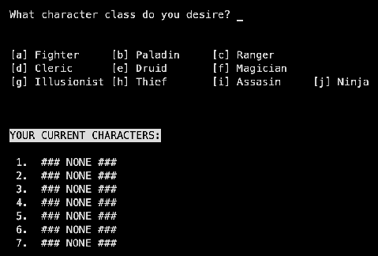
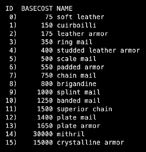
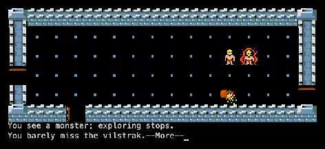
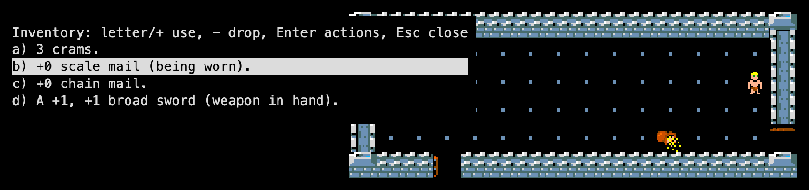

The Ultimate Adventure in the Dungeons of Doom
> Enter the dungeonUltraRogue is based on Rogue 3.6 and Advanced Rogue. Herb Chong developed it between 1985 and 1986; the change log in the source starts in December 1984. Versions 1.0.3 and 1.0.7 came out between 1992 and 2005 with help from the Roguelike Restoration Project. See the family tree.
| Herb Chong | Author (copyright 1985–1995) |
| Michael Morgan, Ken Dalka | Advanced Rogue, the base |
| Roguelike Restoration Project | Maintenance; 1.0.7 (urogue @ 8dec2be) |




history.txt)monsdata.c)README, artifact.c)monsdata.c) is over 3,000 lines.ur_read_room read an int as a short). Source: memmaker/urogue.| Thing | Count | Notable ones |
|---|---|---|
| Classes | 10 | Fighter, paladin, ranger, cleric, druid, magician, illusionist, thief, assassin, ninja. |
| Monsters | ~400 | Vilstrak, Demogorgon, Tulkas the Valiant, Nerull the Grim Reaper, Lucifer. |
| Artifacts | 8 | Phial of Galadriel, Palantir of Might, Silamril of Ea (sic), Amulet of Yendor, Magic Purse of Yendor, Sceptre of Might, Wand of Yendor, Crown of Might. |
| Potions | 22 | |
| Scrolls | 28 | |
| Rings | 32 | |
| Wands & staffs | 23 | |
| Armour | 16 | Soft leather to mithril and crystalline armour. |
| Weapons | 60+ |
No separate manual exists. The README that came with the game (treasures, options, classes) is here: read it (text). The in-game help (?) lists the commands.
No walkthrough exists. Tips: